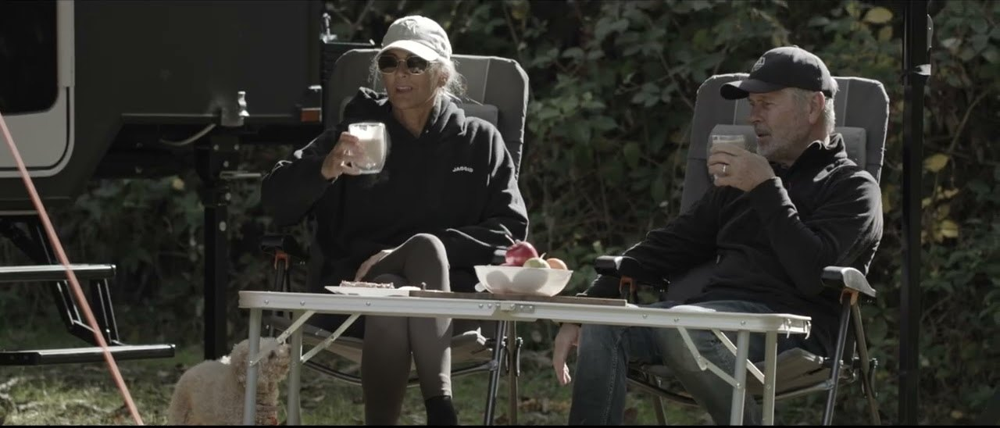

Range
Buy
Events
About
Meet the Team
Our Partners
Wonderlanders
The Feel Good Family
Wheatland Wanderers
Sandy Van Travels
Livin In Sanity
The Kiwi Van Life
8 Feet Travels
Media
Contact
Build your Caravan

Explore the range
Download brochure
HEADER DEPTH
0 — live
1 — raised slab
2 — floating card
3 — tilt
Scroll to the white section — shadow does not read on the dark video.